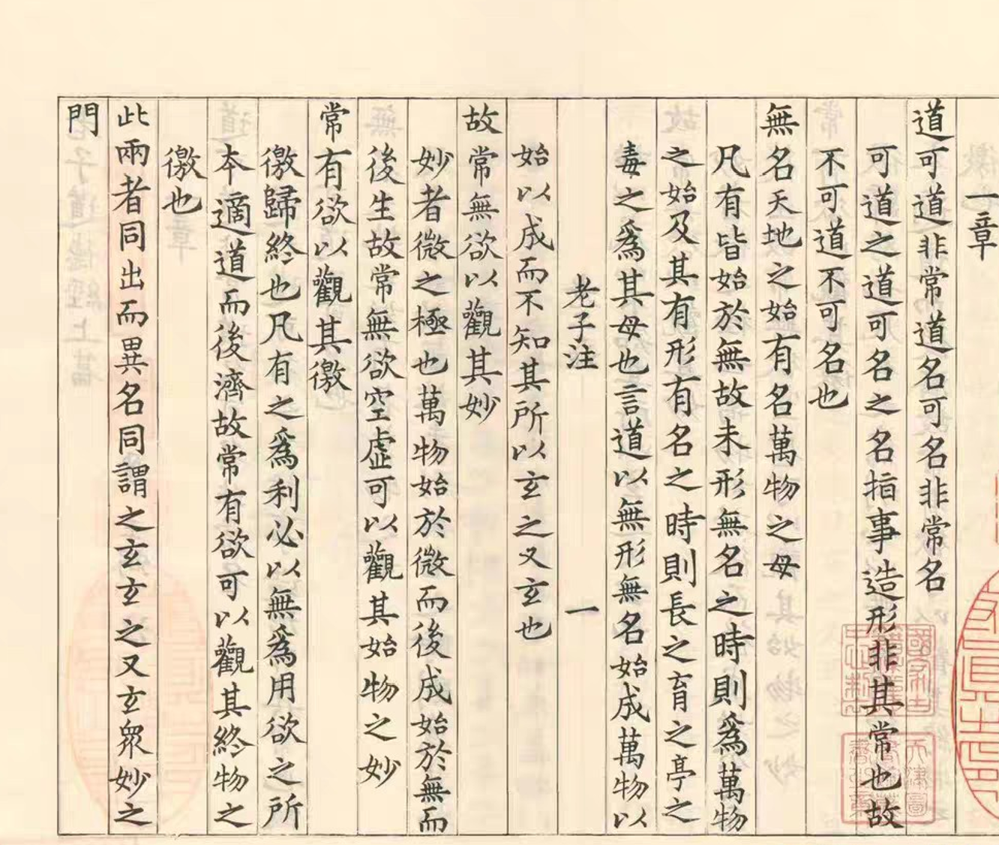
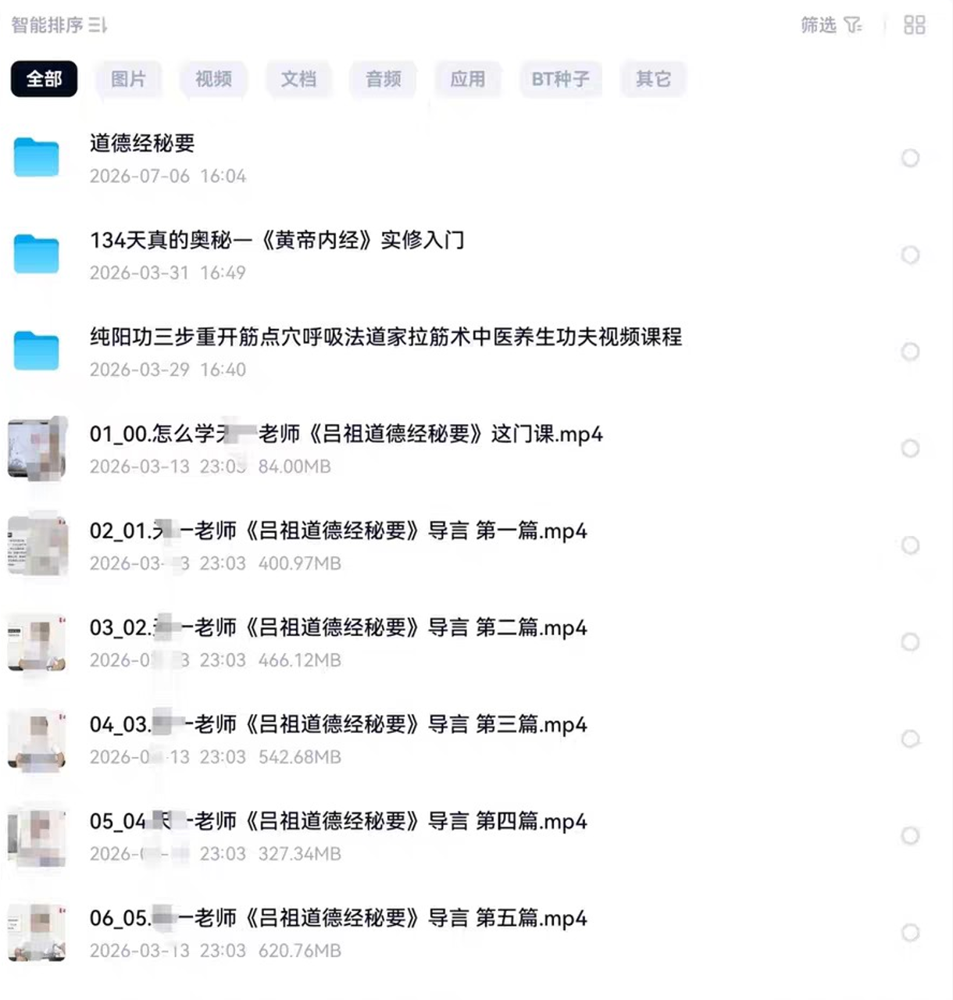

《道德经》30节
以30个主题或章节单元组织内容，适合希望快速建立整体框架的学习者。
入门梳理课程目录
不同课程的切入角度与课时数量各不相同。可以先选择短课建立整体认识，再进入逐章细读。
以30个主题或章节单元组织内容，适合希望快速建立整体框架的学习者。
入门梳理从章句义理和生活体验切入，帮助理解看似简短却内涵丰富的文字。
义理解读对应八十一章逐章学习，适合希望按原书顺序长期研读的人群。
逐章精读围绕核心概念与思想脉络展开的专题讲解资料。
专题课程兼顾整体框架和重点章句，课程体量适中，便于持续学习。
系统课程以问题为线索走近老子思想，关注经典与现实生活之间的联系。
问题导读提取《道德经》中的处世与人生智慧，适合主题式学习。
人生智慧课时更细，适合希望从多个角度深入理解章句的人群。
深度研读回到原文
道可道，非常道；名可名，非常名。无名天地之始，有名万物之母。
讲解可以提供路径，但不能代替个人阅读。建议把课程和古籍原文放在一起：先读原文，再听讲解，最后写下自己的理解。
获取原文与研读资料 →

专题资料
资料列表显示包含导言与连续分篇视频，单集文件约数百 MB。适合作为常规《道德经》课程之外的专题补充。
截图中还出现其他传统文化资料，但本页只展示与《道德经》直接相关的内容。
建议学习方法
不急着寻找唯一解释，先感受章句本身。
根据时间和基础选择合适课时的讲解。
把不同老师的观点与原文逐句对照。
记录一句启发，并观察它如何进入生活。
获取最新目录
添加后请说明你想了解“古籍原文”“81节课程”“95讲”或“道德经秘要”。我会发送当前可提供的目录、格式和说明。

《道德经》原文本身属于传统经典，但现代讲解课程、录音录像、注释与整理版本可能受著作权保护。本页仅展示资料目录；本站只可提供原创整理、公共领域或已取得合法授权的内容，不提供来源不明或未经授权的复制品。